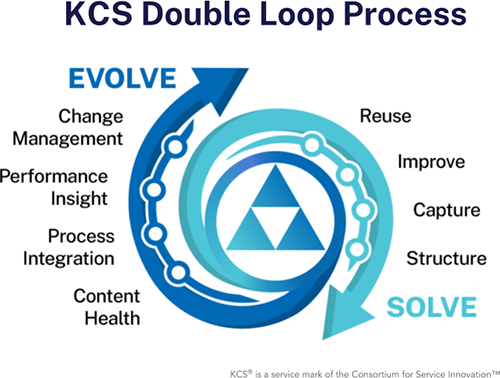

出典: Consortium for Service Innovation, Knowledge-Centered Success: Practices Guide (2027) — CC BY-NC 4.0（原文を日本語に翻訳し、ページを章ごとにまとめ直したもの） 元のページ:
- The Solve Loop
- Practice 1: Reuse
- Technique 1.1: Search Early, Search Often
- Technique 1.2: Seek to Understand What We Collectively Know
- Technique 1.3: Track Reuse
- Practice 2: Improve
- Technique 2.1: Reuse is Review
- Technique 2.2: Flag it or Fix it
- Technique 2.3: Empower to Improve
- Practice 3: Capture
- Technique 3.1: Capture Knowledge in the Moment
- Technique 3.2: Capture the Requestor's Context
- Technique 3.3: To Search is To Capture
- Technique 3.4: New Articles are Created on Demand
- Practice 4: Structure
- Technique 4.1: Use a Simple Template
- Technique 4.2: Complete Thoughts, Not Complete Sentences

図：KCSのダブルループのプロセス（KCS Double Loop Process）。Solve Loop の4つのプラクティス（再利用・改善・記録・構造化）と、Evolve Loop の4つのプラクティス（コンテンツの健全性・プロセスの統合・パフォーマンスの把握・チェンジマネジメント）。
ワークフローの中で再利用し、改善し、記録し、構造化することで、既存のナレッジを活かし、それを正確で使える状態に保つ。
ナレッジを再利用して手戻りを避け、是正措置が必要な広範な課題を見つけ出す。
どんな情報があり、どんな答えが現時点で手に入るのかを、絶えず見つけ出す。
既存の経験とナレッジを活かして、新しい依頼に応える。
ナレッジの再利用についての情報を集め、届けている価値についての知見を得る。
既存のナレッジを使いながら改善し、タイムリーで正確な状態に保つ。
ナレッジを使う過程で、改善するためのコンテキストがあるうちにレビューする。
必要なナレッジの改善を仕事の流れの中で行い、後からの監査や整理を不要にする。
権限を持つ人とシステムが、やり取りの最中にナレッジを更新できるようにし、重複を減らし、内容を最新に保ち、高い質と価値を確保する。
ナレッジは、その場で、依頼者のコンテキストの中で記録し共有する。そうしなければ、後から解決策を見つける（あるいは作り直す）のが難しくなる。
コンテキストが最もはっきりしているのは、暗黙知にアクセスできる、使われるその瞬間である。
依頼者の視点を依頼者自身の言葉で記録し、見つけやすさを高める。
ナレッジを探す活動とそのコンテキストを記録することで、改善の機会を見つける。
コンテキストを記録する。作成するのは必要なときだけにする。
人と機械の両方がナレッジを効果的に使えるよう、ナレッジを構造化する。
単純なテンプレートを使って、人のワークフローと自動化されたワークフローの両方で、コンテンツを見つけられ、行動に移せるものにする。
ナレッジを行動に移せるものにするのに十分な情報を記録する。個別の、完結した考えは、読みやすさと検索のしやすさを高める。
KCSのコアコンセプトの1つに、集団的なオーナーシップがある。これはKCSに固有のものではない。例えば、スイスは世界で最も清潔な国の1つとして知られている。塵ひとつ無い。どうやってそうしているのか。それは集団的なオーナーシップの結果である。スイスでは、ゴミを見かけたら拾う。それだけのことである。スイスの人たちは、他の国より清掃班の予算が多いわけでも、道路清掃員が多いわけでもない。彼らが持っているのは、ゴミの無い環境について、全員が賛同している価値観である。
これは、KCSのプラクティスに見られるのと同じ考え方である。システム全体のレベルでは、私たち全員が集合的なナレッジを所有している。Solve Loop、つまり出来事のレベルでは、それは、自分が触れるナレッジの質に自分が責任を持つことを意味する。次の Solve Loop のテクニックは、どれも行動レベルでの集団的なオーナーシップの価値観を表している。
ナレッジを再利用して手戻りを避け、是正措置が必要な広範な課題を見つけ出す。
どんな情報があり、どんな答えが現時点で手に入るのかを、絶えず見つけ出す。
既存の経験とナレッジを活かして、新しい依頼に応える。
ナレッジの再利用についての情報を集め、届けている価値についての知見を得る。
進歩するツールと自動化は、これらのテクニックをどのように実践するかに大きな影響を与えている。定めておくべき重要なことは、わかっていることを見つけ出すためのプロセスと、何が使われたかを示すためのプロセスである。
どんな情報があり、どんな答えが現時点で手に入るのかを、絶えず見つけ出す。
検索、レコメンデーション、その他のコンテンツ探索ツールによって既存のナレッジを浮かび上がらせることは、すべてのナレッジワーカーのワークフローに組み込まれていなければならない。課題がはっきりと記述され、環境についてのコンテキストがいくらかあれば、すでにわかっていることを探し始めるのに十分な手がかりがある。
ここでいう「検索」は、手作業のキーワード検索や自然言語での問い合わせにとどまらない。既存のナレッジを明らかにする助けになるものすべて、つまり、インテリジェントな提案、コンテキストに応じたレコメンデーション、その他の新しいコンテンツ探索の自動化を含む。
新しい情報が集まるたびに、コンテンツの探索を繰り返し行う。
新しいナレッジを作成する前に、使えるあらゆる探索の手段を使って、すでに何があるかを確認することが欠かせない。これにより重複を避け、これまでの仕事を作り直すのではなく、その上に積み上げることができる。
既存の経験とナレッジを活かして、新しい依頼に応える。
組織のレベルでは、このテクニックは、システムに記録された集合的な経験から恩恵を受けるための主要な方法である。
誰か別の人が、同じ課題や関連する課題に今まさに取り組んでいるかもしれない。作成中（WIP）の記事を記録して、その領域で仕事をするすべての人に見えるようにしておくことの価値はここにある（詳しくは KCS記事の状態 を参照）。
早めに、何度も探す。ただし、いつまでも探し続けはしない。検索を何回か絞り込み、課題の記述が完全になり、関係がありそうな環境の特徴を十分に集めたら、検索をやめる。この時点で検索結果から何も価値あるものが得られなければ、課題解決の診断の段階に移る。
検索は、ナレッジワーカーが、自分が働いている環境と使っているツールのコンテキストの中で身に付けなければならないスキルである。一般に、検索クエリに与えるコンテキストが多いほど、検索結果は良くなる。正しく検索することと、いつ検索をやめるかを判断することは、KCSのコーチが重点を置くことのあるスキルの1つである。
私たちは、解決しようとする前に理解しようとする。
ナレッジの再利用についての情報を集め、届けている価値についての知見を得る。
記録システム（メール、ケース、インシデント、コミュニティのスレッド）と、その課題を解決するナレッジとを関連付けられることは、KCSの方法論の重要な要素である。関連付けによって生まれるデータは、開発チームに行動に移せるデータを届けることや、セルフサービスの成功率を高めることなど、Evolve Loop の多くの活動に必要である。寄せられた質問と提供した答えを関連付けられない組織は、不利な立場に置かれる。
ナレッジと出来事の関連付けは、記録システム上で記事を出来事に紐付けることで行われるのが最も一般的である。
関連する解決策を持つKCS記事が見つかったら、記録システム上でその記事を出来事に紐付けるべきである。既存の記事は、追加の症状や関連する環境の情報で更新（改善）すべきである。
関連する記事がナレッジベースに見つからなければ、新しい記事を作成すべきである。理想的には、検索に使った言葉と言い回しが入った作成中（WIP）の記事やケースのメモがすでにあるはずだ。
KCS記事を作成するときの目安は、1ページに収め、他のKCS記事や、他の資料（規程文書、製品マニュアル、診断ガイド）の特定の節へのハイパーリンクを入れることである。KCS記事は依頼者のコンテキストで書かれるので、他の資料へのコンテキストに即した索引として機能しうる。この方法により、冗長さが無くなり、情報をいくつもの場所で維持管理する必要も無くなる。
すべての課題を解決するのに必要なナレッジをすべて収められる、単一のコンテンツ資源は無い。KCS記事の中で参考資料へのリンクを使えば、経験の多い利用者は内容を素早く読み進められ、同時に、経験の少ない利用者も複雑な解決策を理解して実行できるようになる。
さまざまな種類のコンテンツを持つ複数のリポジトリやデータベースを索引付けしている場合、次の基準を満たしていれば、課題を解決するKCS以外のコンテンツに紐付けることを勧める。
これらの基準を満たしていれば、他の種類のコンテンツへのリンクは、特定の対象者のために見つけられ、使えるナレッジを作るという、KCSの根本的な目標を満たす。この場合、KCS記事を作成しても、価値はほとんど、あるいはまったく増えない。上の基準を満たす他の種類のコンテンツへのリンクは、再利用の傾向とパターンが見えるよう、再利用回数、紐付け率、新規と既知の分析に数えるべきである。
重要な目安は、コンテンツの重複を避けることである。可能な限り、すでにあるコンテンツに紐付ける。KCS記事からKCS以外のコンテンツに紐付けるときも、上に挙げた同じ基準が当てはまる。基準をすべて満たしていなければ、そのコンテンツを記事に写して載せるべきである。
既存のナレッジを使いながら改善し、タイムリーで正確な状態に保つ。
ナレッジを使う過程で、改善するためのコンテキストがあるうちにレビューする。
必要なナレッジの改善を仕事の流れの中で行い、後からの監査や整理を不要にする。
権限を持つ人とシステムが、やり取りの最中にナレッジを更新できるようにし、重複を減らし、内容を最新に保ち、高い質と価値を確保する。
対応者は、自分が触れる記事に責任を持つ。そうすることで、記録されたナレッジは私たちの集合的な経験になる。オーナーシップの感覚が育てば、使われているナレッジを私たちは絶えずレビューし、改善していく。
ナレッジを使う過程で、改善するためのコンテキストがあるうちにレビューする。
ナレッジベースの集団的なオーナーシップとは、使われるその瞬間に、自分が触れているナレッジの質に自分が責任を持つことを意味する。ナレッジベースは、現時点でわかっている最善のことを表していなければならない。ナレッジを使い続けることが、価値のあるKCS記事を見つけ、その質を高める方法である。
価値のある記事に注意を向けさせるのは、再利用に任せよう。このテクニックを受け入れることは、使われているナレッジを絶えず改善していくことを意味する。一度も参照されない記事については、レビューに時間もお金も無駄にしない。
これは、需要主導のシステムというKCSの基本的な原則の一例であり、KCSが規模を拡大でき、効率が良い理由の1つである。この需要主導のテクニックは資源の活用を最適化し、品質保証や編集の専任の人員への投資を組織が避けるのに役立つ。再利用の最中のレビューは、情報をタイムリーに使えるようにすることも促し、依頼の処理が終わった後に行う、費用がかかって時間のかかるナレッジエンジニアリングを避けられる。
記事は、課題を解決するのに足りるように書くべきである。Solve Loop では、これは、対応者が自分の触れるKCS記事の質に責任を持つことを意味する。KCS記事を再利用するたびに改善することで、やり取りのたびにKCS記事の質が上がり、しかも使われている記事だけに集中できる。
これをうまく行うには、素早く閉じたフィードバックの仕組みが必要である。KCSの習熟度モデルとKCSのコーチは、ナレッジワーカーが、記事をどのように、いつ改善すべきかを学ぶ助けになる。KCS Publisher になるナレッジワーカーが増えるにつれて、依頼者も「再利用はレビューである」のプロセスに参加するようになる。依頼者は、理解できない記事や役に立たない記事をすぐに指摘してくれる。必要なときに必要なだけ公開するモデルでは、是正措置で素早く応えられなければならない。
ナレッジを作成しレビューするのに最もふさわしいのは、それを毎日使っている人たちである。「再利用はレビューである」は、それを実現する方法である。
必要なナレッジの改善を仕事の流れの中で行い、後からの監査や整理を不要にする。
KCSの文化の中では、人はナレッジベースで目にしたものに責任を持つ。キャンプ場のルールを当てはめよう。ナレッジを、見つけたときと同じか、それより良い状態にして去るのである。訓練を受けた対応者は、小さな問題をその場で片付けたり、KCS記事を豊かにし進化させる情報を付け加えたりできる。
私たちは、自分が触れる記事の質と正確さに責任を持つ。間違っている、あるいは意味が通らないと思うものを見つけたら、2つの行動のどちらかを取る必要がある。指摘するか、直すかである。「指摘するか、直すか」のテクニックは、コンテンツ標準への違反と、技術的な正確さや網羅性の両方に当てはまる。
記事の課題や症状の記述は、依頼者のものである。既存の記事を改善するときは、課題の記述に付け加えるのであって、すでに記事の一部になっているものを書き直したり、編集したり、削除したりはしない。どれほど変わっているように見えても、その記述は依頼者が課題をどう捉え、どう体験したかを表していると考えなければならない。それによって、課題を同じように捉えるであろう他の人が、その記事を見つけられるようになるのである。
新しいKCS記事を作ることが正当化されるのはどんなときか。KCS記事を作成すべきなのは、特定の環境における課題に対処するために固有の解決策が必要で、そのような記事がナレッジベースにも、検索でき維持管理されている他のリポジトリにも存在しないときである（再利用を記録する を参照）。コンテンツ標準がある程度の判断基準を示すべきだが、KCSの方法論の多くのことと同じく、この決定には判断が必要である。
一般には、1つの解決策と原因につき1つのKCS記事にすべきである。同じ課題や症状に対して、異なる環境向けの複数の解決策を同じ記事に入れるべきではない。ただし、これは絶対的なルールではなく、基準はその環境での経験に基づいて作っていくべきである。KCS記事は使われることで進化し、経験が積み重なるにつれて統合されたり分割されたりすることもある。
決定は、その記事の想定対象者にとって何が最善か、何が最もわかりやすいか、つまり対象者にとって何が最も腑に落ちるかに基づいて下すべきである。
権限を持つ人とシステムが、やり取りの最中にナレッジを更新できるようにし、重複を減らし、内容を最新に保ち、高い質と価値を確保する。
ナレッジワーカーが自分の触れるナレッジを改善できるようにKCSのプロセスを設計することには、複数の利点がある。
すべてのナレッジワーカーが、すぐにすべてを行えるわけではない。KCSの習熟度モデルが、システム上でのナレッジワーカーの権限を定める。KCSの考え方、コンテンツ標準、ワークフローへの理解を示し、一貫して良い判断を下せる力を示したナレッジワーカーは、システム上でより多くのことを行う権利を得る。習熟度モデルは組織によって異なるが、一般に、KCS Publisher の役割を持つナレッジワーカーは、ナレッジ記事を作成・改善し、公開範囲の属性を更新して社外から見えるようにできる。組織に KCS Publisher が多いほど、タイムリーで正確なナレッジが手に入りやすくなる。
ナレッジマネジメントのツールは、組織が定めたユーザープロファイルと習熟度に基づいて権限を管理できるよう設定する。
ナレッジは、その場で、依頼者のコンテキストの中で記録し共有する。そうしなければ、後から解決策を見つける（あるいは作り直す）のが難しくなる。
コンテキストが最もはっきりしているのは、暗黙知にアクセスできる、使われるその瞬間である。
依頼者の視点を依頼者自身の言葉で記録し、見つけやすさを高める。
ナレッジを探す活動とそのコンテキストを記録することで、改善の機会を見つける。
コンテキストを記録する。作成するのは必要なときだけにする。
課題を解決した経験を記録する。何が起きているかについての依頼者の捉え方、それが起きている環境、そして課題の解決策は、どれも重要で、行動に移せる知見を与えてくれる。
対応者は、KCS記事の将来の価値を見積もろうとすべきではない。解決する価値のある課題なら、残しておく価値がある。私たちの目標は、ナレッジに触れるすべての人の集合的な経験を反映したナレッジベースを作ることである。その経験がどれだけ完全かが、パターンと傾向を通じて、依頼者と対応者の経験を映し出す。記録しないことで一部の課題を選んで無視すれば、時間がたったときのパターンの価値が下がる。
KCS記事の最大80%は、めったに、あるいはまったく再利用されない。残りの20%のうちの一部は、何度も再利用される。記事の再利用のパターンは、常に80対20の法則に当てはまる。課題の80%は、ナレッジベースの20%によって解決される。ほとんどが使われないなら、なぜすべてを作るのか。経験の将来の価値は予測できないからである。
セルフサービスでの記事の再利用のパターンは、社内のものとは異なる。依頼者がセルフサービスを使い、答えを見つけて満足するが、答えを得るためにわざわざ有人の窓口（インシデントの起票）を使おうとはしない、という課題もある。有人のモデルとセルフサービスのモデルでの活動について、Consortiumのメンバーから集めたデータでは、その比は1対10（有人対セルフサービス）である。依頼者は、良いセルフサービスの仕組みを、有人のモデルより10倍多く使う。このデータは、ハイテク業界の顧客向けサポート組織に基づいている。何が「良い」セルフサービスの仕組みを作るかについて詳しくは、Measuring Self-Service Success の セルフサービス戦略 を参照のこと。
だからこそ、私たちは、記事を紐付け、改善し、まだ無ければ作成することによって、ナレッジワーカーのすべての経験を記録する。答える価値のある質問や、解決する価値のある問題なら、ナレッジベースに入れておく価値がある。記録し、価値があるとわかった記事の質は、KCSの他のプロセスに改善させればよい。KCSを適切に実践していれば、再利用・改善・記録の活動によって処理時間が増えることはない。再利用から得られる将来の価値は、解決策を提供する能力、速さ、一貫性を劇的に高めうる。
解決する価値のある課題なら、残しておく価値がある。
コンテキストが最もはっきりしているのは、暗黙知にアクセスできる、使われるその瞬間である。
KCS導入の大きな一歩は、ナレッジがリアルタイムに作られ共有されるという独特のあり方を受け入れることである。ナレッジは、事後に文書化されるのではなく、やり取りの一部として記録され、すぐに他の人に見えるようになる。記録のプロセスは Solve Loop に欠かせない。依頼の最初の記述から最終的な解決まで、途中でナレッジを記録していく。解決策がまだわかっていなくても、ナレッジは他の人、特に同じ領域で仕事をしている人に見えるようになる。こうして、ナレッジは追加の手順ではなく、やり取りの副産物になる。依頼が解決した後でナレッジを記録したり記事を作成したりしているなら、極めて重要な情報を取りこぼしている。そして、それはKCSを実践していないということだ。
ナレッジベースを依頼と対応のプロセスに組み込む（早めに探し、何度も探す）ことで、すでに解決済みの課題や解決の途中にある課題に取り組んでしまう可能性が大きく下がる。検索は記録の一形態である。
KCSの「必要なときに必要なだけ」というテーマは、KCSをナレッジエンジニアリングの手法と区別するものの1つである。
診断のスキルについての研究プロジェクトが、医師と自動車整備士を対象に行われた。2人とも、それぞれの分野で問題の診断に非常に長けていることで知られていた。2人は、問題を診断するときの自分の取り組み方を書き出すよう求められた。その後、研究チームは、それぞれが実際の環境で問題を診断する様子を観察した。どちらも、自分が書き出した手順には従っていなかった。2人とも状況から手がかりを得て、暗黙知を引き出しながら、診断のプロセスを即興で組み立てていた。実際の状況で使われたその暗黙知には、その状況のコンテキスト無しにはアクセスできなかったのである。
問題解決は創造的なプロセスである。経験、勘、コンテキスト、そして複数の変数や入力を一度にうまく処理することに頼っている。この暗黙の情報と、それを暗黙知に結び付ける私たちの力は説明するのが難しく、需要の無いところで再現しようとしても、アクセスすることも引き出すこともできない。
暗黙の情報は、多くの場合、質問への応答として、あるいは情報が必要とされるコンテキストの中で、会話の中で形式化される。だからこそ、依頼に対応するときは、その場で情報を記録する必要がある。依頼者のコンテキスト（課題についての依頼者の捉え方）と、課題を解決する過程で形式化される暗黙知の両方を、確実に記録する必要がある。これにより、対応者が知っていることと依頼者の体験が結び付き、課題についての、意味があって完全な（見つけられ、使える）全体像が作られる。
確認のための質問は、やり取りの成功率を高める細部を引き出し、確かめるのに役立つ。ナレッジベースを検索すると、似た状況が見つかり、既知の課題を確かめたり除外したりするための確認の質問を思い付くことがある。似た課題を見つけることは、自分が知っていることを思い出す助けになる。
最初からコンテキストに富んだ情報を記録することで、やり取りのプロセス全体と記事作成のプロセスが、より簡単で効果的になる。別の依頼者が似た課題を報告してきたとき、その依頼者の体験により共感でき、関連するナレッジを素早く見つけられるようになる。
依頼者の視点を依頼者自身の言葉で記録し、見つけやすさを高める。
KCSでは、解決する前に、依頼者の体験を理解しようとする。この理解には、捉えられている課題（依頼者の言葉で）と、課題が起きている環境の両方についての情報が必要である。最初のやり取りで状況についての依頼者の捉え方を記録することで、将来、この課題を同じように、あるいは似たように捉えるかもしれない他の依頼者にとって、その経験の見つけやすさと関連性が劇的に高まる（コンテキストはコンテンツと同じくらい重要である）。
需要主導というKCSの原則は、今起きていることを記録することが重要であり、それが関係するかもしれない他の状況を推測することに時間を費やすべきではない、と述べている。ナレッジは、再利用され、他の人に更新されるにつれて進化していく。
依頼者のコンテキスト、つまり依頼者の言葉と言い回しを記録することで、他の依頼者にとっての見つけやすさが高まる。
構造化された形で記録することの目的は、状況の「枠組み」を作ること、つまり、依頼者の必要・捉え方・体験と、依頼者の環境の関連する側面を、解決のプロセスへの入力として記録することである。この情報を使って、別の依頼者の体験を反映させて既存の記事を改善するか、まだ無ければ新しいKCS記事を作成する。
状況についての依頼者の捉え方が間違っているとわかった場合でも、それを記録することで他の人にとっての見つけやすさが高まる。課題の欄は依頼者のものである。対応者の仕事は、関連する環境の要因、解決策、原因を厳密かつ正確に記録することであり、依頼者による問題の記述を正すことではない。ただし、対応者は、課題をより厳密に特徴付けるために、追加の詳細を記録してもよい。課題や症状を記述するときに技術的な正確さは求められない。もちろん、環境・解決策・原因の記述では技術的な正確さが欠かせない。
記事には依頼者のコンテキストを入れたいが、課題についての冗長で長い、関係の無い情報は入れたくない。目標は、記事を他の人が見つけられ、使えるものにする情報を記録することである。情報が関連しているかどうかは、対応者の側の判断が必要な、KCSの数多くの領域の1つである。
内容の関連性についての指針をいくつか挙げる。
課題に取り組みながら内容を記録し、磨き上げていくことが欠かせない。最初はとても文字どおりに記録し、解決しようとする前に理解しようとする。そのため、課題を解決してみると状況に関係が無いとわかる情報を記事に記録してしまうこともある。これは環境の記述（機能、製品、バージョン、プラットフォーム）によく当てはまる。記事の状態を作成中（WIP）から未検証や検証済みに変える前に、内容の関連性を手早く確認すべきである。
KCS記事を仕上げる過程（解決策がわかった後）で、どの情報を記事に入れるかについて最善の判断を下す。解決策を理解してみると課題に関係の無い情報を記録していることはよくあり、結局は関係が無い、誤解を招く、不正確である、あるいは対象者にふさわしくないとわかった情報（特に環境の記述）は、確実に取り除くべきである。環境の欄には、自分たちが決めた語彙を使って、関連する正確な記述を記録したい。環境の記述の仕方はできる限り一貫させたい。そして、課題の記述は、依頼者が課題を記述するのに使うのと同じだけ多様であってほしい。
ナレッジを探す活動とそのコンテキストを記録することで、改善の機会を見つける。
検索に使う言葉と言い回しは、既存のKCS記事を改善したり、新しいKCS記事を作成したりするための内容になる。依頼者のコンテキストを記録しているので、特に価値がある。検索に使った内容は保存し、検索結果に基づいて更新し、関連する記事がまだ無ければ新しいKCS記事の書き出しにすべきである。
課題や環境の記述のような内容が、KCS記事の枠組みを作る。この内容は、まだ解決策が無くても保存し、共有すべきである。私たちはその課題に取り組み続けるかもしれないし、解決のために適切な人にエスカレーションするかもしれない。作成中の記事（あるいは検索できるケースのメモ）があれば、その課題が報告されていることを他の人が知ることができる。解決策が判明したら、それを使って作成中の記事を仕上げる。このKCS記事を完成したものとみなし、受けたKCSの訓練と解決策への確信に基づいて、適切な状態を付ける。私たちがその記事に取り組んでいるあいだに、他の未解決のケースがその記事に紐付けられていれば、それらのケースも素早く解決できる。
KCS記事の枠組みを作り、仕上げるプロセスによって、人は課題を解決する基盤としてナレッジベースを使うようになる。そしてそれが、課題を解決する過程で集合的な経験が確実に記録されることにつながる。
依頼者が助けを求める入口としてセルフサービスを使う環境は、依頼者のコンテキストを記録する絶好の機会になる。依頼者が検索に使った言葉と言い回し、閲覧したときのクリックストリーム、開いた記事などを記録しておくと、依頼者がセルフサービスから有人の窓口へ移ったときに非常に役立つ。
まず、これによって依頼者のコンテキストを確実に記録できる。次に、この情報を対応者が見られるようにしておけば、セルフサービスで解決策を探すのに費やした労力が無駄ではなかったと依頼者に感じてもらう助けになる。すでに何が行われたかを確認できるので、この情報はプロセスを早めるのにも役立つ。これを依頼者にとっての「行き止まりを作らない」と呼んでおり、セルフサービスで良い体験を生み出すうえで決定的な要因である。
依頼者の検索語は、既存の記事を修正して見つけやすくしたり、まだ記事が無ければ、新しいKCS記事の問題や課題の記述を作ったりするのに使える。問題の記述は依頼者の検索の活動から来たものなので、必ず依頼者のコンテキストに即している。
課題に取り組む中で最終的にナレッジベースの記事が見つかったら、他の人が見つけられるよう、その記事を改善すべきである。
再利用は、使われている記事の改善と、使われている記事の見えやすさの向上の両方を推し進める。
コンテキストを記録する。作成するのは必要なときだけにする。
Solve Loop の活動に使われるテクノロジーが進化し成熟し続けるにつれて、記録と作成の違いをはっきりさせておくことが役に立つ。
問題解決のプロセスの一部として、私たちは常に依頼者のコンテキストを記録している。それは、1) 再利用や改善のために既存のナレッジを見つけるため、2) 必要なときに、そのコンテキストを使って新しい記事を作成するためである。記録はすべてのやり取りで行うものだが、新しい記事の作成は需要によって決まる。KCSの実践が成熟するにつれて、再利用できる記事が増えるおかげで作成率は下がっていく。
記録とは、すべてのやり取りで依頼者のコンテキストについて行っていることである。その場でコンテキストを記録し、それを使って検索して既存のナレッジを見つける。ナレッジが見つかったら再利用し、必要なら改善する。記事を作成するのは、早めに、何度も探した結果、記事が存在しないとわかったときだけである。
作成とは、記録したメモを新しい記事にする必要があるときに行うことである。
共通の理解を持ち、期待をそろえるために、記録（Capture）と作成（Create）を2つの別のものとして話すことが重要である。KCSの道のりの初めによくある誤解は、これからはすべてのケースについて、まったく新しい記事を作成する時間が必要になる、というものである。作成率は最初は高いかもしれないが、時間とともに落ち着いていく。しかし、コンテキストの記録に終わりは無い。依頼者のコンテキストを一貫して記録し、それを検索と改善に使うことの重要性を強調しない組織は、多くの場合、見つけやすさの問題に苦しむことになる。ナレッジベースが、依頼者が見つけることも使うこともできない記事であふれてしまうのである。
新しいテクノロジーによって、構造化されたケースのワークフローの中で依頼者のコンテキストを記録し、必要なときにはケースのメモから新しい記事の下書きを生成することが容易になりつつある。これは新しい記事の作成には役立つが、既存の記事を改善するプロセスの代わりにはならないことに注意してほしい。
人と機械の両方がナレッジを効果的に使えるよう、ナレッジを構造化する。
単純なテンプレートを使って、人のワークフローと自動化されたワークフローの両方で、コンテンツを見つけられ、行動に移せるものにする。
ナレッジを行動に移せるものにするのに十分な情報を記録する。個別の、完結した考えは、読みやすさと検索のしやすさを高める。
構造化とは、正しい情報を見つけやすく、理解しやすく、再利用しやすく、その上に積み上げやすいようにナレッジを整理することである。よく構造化されたコンテンツは、ワークフローの中の摩擦を減らし、チームとツールをまたいでナレッジを広げていくための信頼できる基盤を作る。重要なのは、構造化によって信号対雑音比が改善されることである。構造化は不要な細部を取り除き、大事なことを際立たせ、ナレッジがその場で使えるだけでなく長期にわたって価値を持つようにする。
一貫した構造、単純なテンプレート、簡潔な文体によって、ナレッジは、人にとっても、ナレッジを浮かび上がらせ、結び付け、それに基づいて動くシステムにとっても、使いやすくなる。
構造化によって、次のことが可能になる。
AIと自動化にとって、構造化は欠かせない。整った形のコンテンツは、解析し、区切り、理解するのが容易であり、システムが正しい情報を取り出し、正確な応答を返し、適切な行動を取ることを可能にする。構造化されたナレッジは、コンテンツを厳密かつ意味のある形で再利用できるようにすることで、チャットボット、インテリジェントアシスタント、自動化されたワークフローを支える。
単純なテンプレートを使って、人のワークフローと自動化されたワークフローの両方で、コンテンツを見つけられ、行動に移せるものにする。
KCSは特定の記事の構造を定めている。この構造は、内容にコンテキストを与え、KCS記事の読みやすさを高め、一貫性を促す。
どんな状況や課題も、次の区分に分けることができる。
依頼の最初からこの構造で情報を記録することで、進めながら作成していくことになる。これは、既知の記事を探してナレッジベースを検索するときに使うべき情報でもある。課題の解決時間が短くなり、新しいKCS記事が既存のナレッジの上に積み上がり、それと統合されることが確実になる。
構造化は、人と機械の両方にとって読みやすさを高める。
理想的には、課題に取り組みながら、KCSのテンプレートの正しい欄に情報を記録していく。これを、今日のメモの取り方（紙の上であれ電子的にであれ）の代わりにすべきである。私たちの多くは、依頼者と話しながら要点を記録している。これが新しい課題だと感じている場合は特にそうだ。作成中の記事（あるいは構造化された、検索できるケースのメモ）にメモを取りたい理由はいくつかある。第一に、この課題についての記事が存在しなければ、プロセスの一部としてそれを作成していることになる。第二に、メモを読みやすい標準的な構造で記録していることになる。そして第三に、誰か別の人が同じ課題や似た課題に取り組んでいれば、その人が作成中（WIP）の記事を見つける可能性が高い。重複した作業を避け、協力して課題を解決できる。
課題が理解され、解決策がわかったら、記録した内容を見直し、環境の記述が関連しているかを確かめて磨き上げる。関連する環境の記述は極めて重要である。症状は似ているが解決策と原因が異なる別の記事と、この記事を区別するのは環境の記述だからである。該当する場合は、原因の欄を更新する。
この単純な構造の最も重要な利点は、人と機械にとっての読みやすさと使いやすさを高めることである。KCS記事の構造とKCS記事の質について詳しくは、コンテンツの健全性のプラクティスを参照のこと。
ナレッジを行動に移せるものにするのに十分な情報を記録する。個別の、完結した考えは、読みやすさと検索のしやすさを高める。
KCSでは、その場で、依頼者の言葉を使って記録する。ただし、依頼者の言葉をすべて記録するわけではない。やり取りの時点で、あるいはその直後に記録できなければならない。KCSは、内容を短く簡潔にすること、つまり完全な文ではなく、完結した考えや短い語句にすることで、内容の「記録しやすさ」と読みやすさを高めることを提唱している。
私たちの目標は、学んだことを、想定対象者が見つけられ、使えるのに十分な形で記録することである。
私たちはナレッジワーカーに、著者やテクニカルライターになってほしいと頼んでいるわけではない。多くの対応者は、依頼に取り組みながらメモを取っている。KCSは、そのメモを構造化された、共有できる形で記録することを提案している。ほとんどの人にとって、その場で記録することは追加の仕事を意味しない。すでに行っていることを、違うやり方で行うことを提案しているのである。利点は、その経験が他の人にとって見つけられ、使えるものになることである。
ここでは、解決に足りるというKCSのコアコンセプトが重要である。